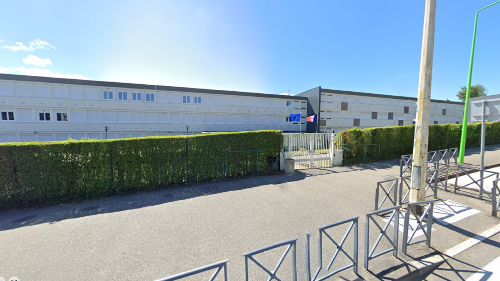

Archives Historiques
Découvrez l'histoire du Lycée Jean Prévost à travers des photos d'archives et des documents historiques.
Chronologie du Lycée
1983
Fondation du lycée
Inauguration du lycée Jean Prévost à Montivilliers, nommé en l'honneur de l'écrivain et résistant français.
2025
Le Lycée Aujourd'hui
Le lycée Jean Prévost tel qu'il est aujourd'hui, un établissement moderne tourné vers l'avenir.
 Lycée Jean Prévost en 2025
Lycée Jean Prévost en 2025Galerie de Photos

Façade principale (1975)

Cour intérieure (1980)

Gymnase (1990)

Ancien CDI (1988)

Cours de physique (1972)

Cours de lettres (1978)

Premier cours d'informatique (1992)

Atelier d'arts plastiques (1985)

Remise de diplômes (1980)

Spectacle de fin d'année (1990)

Compétition sportive (1987)

Journée portes ouvertes (2000)

Premier proviseur (1965)

Visite ministérielle (1975)

Équipe enseignante (1980)

Rencontre d'anciens élèves (2010)
×